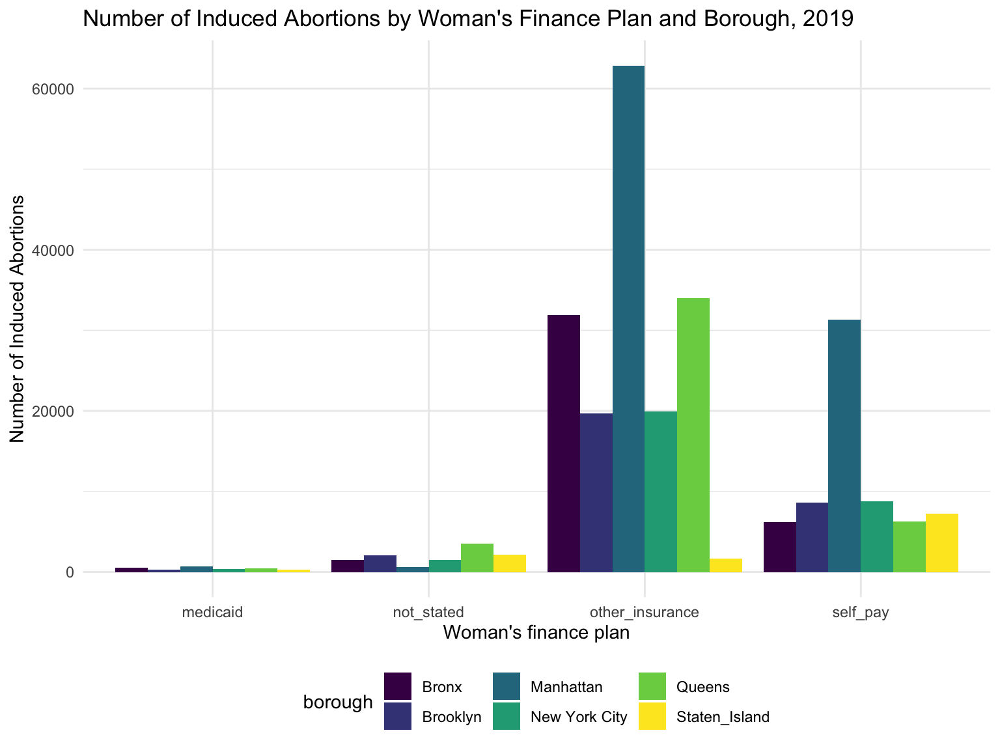
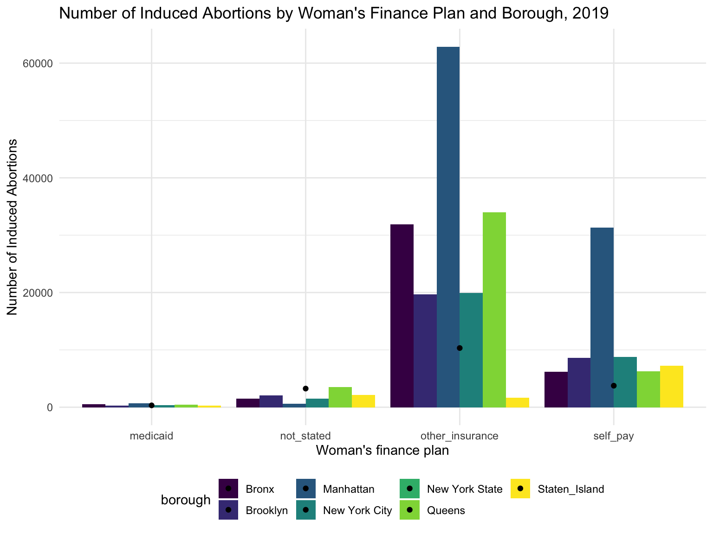

First, we want to look at the overall trends in abortion rates in New York City over time (2014-2019).
| year | total |
|---|---|
| 2019 | 46981 |
| 2018 | 46796 |
| 2017 | 46796 |
| 2016 | 56607 |
| 2015 | 58627 |
| 2014 | 63673 |
From the data points and graph, it is evident that abortion rates are overall decreasing over the years. For our project, we will be analyzing data from 2019 which is the most recent dataset.
| year | Bronx | Brooklyn | Manhattan | Queens | Staten Island |
|---|---|---|---|---|---|
| 2019 | 11820 | 13024 | 8738 | 11968 | 1431 |
| 2018 | 12035 | 12366 | 9450 | 11666 | 1279 |
| 2017 | 12035 | 12366 | 9450 | 11666 | 1279 |
| 2016 | 14024 | 16610 | 9919 | 13479 | 2575 |
| 2015 | 14992 | 18026 | 10294 | 13681 | 1634 |
| 2014 | 16410 | 19173 | 11606 | 14682 | 1802 |
We want to investigate the relationship between induced abortion and maternal age.
The highest rates is found among those in Manhattan among those who are less than 20 years old with a rate of 1964.9 induced abortions to 1000 live births. The second highest rates is similarly found among those less than 20 year olds in Queens with a rate of 1780.1 induced abortions to 1000 live births. Overall, the rate of abortion seems to decrease with age. Across the age categories, it seems that Staten Island, New York State, and Brooklyn seemed to have lower abortion rates.
Abortion numbers in the five boroughs in non-Hispanic population. (which year?)
How was race determined? Self-report? Also need to figure out a way to reorder…
The highest rate is found among those in the Bronx among those who are Non-Hispanic-Black Only with a rate of 1228.3 induced abortions per 1000 live births. The lowest rate was found among Non-Hispanic White-Only in Brooklyn with a rate of 88.6 induced abortions per 1000 live births. The rates were highest among those who were Non-Hispanic-Black Only.
Next we investigate the trend in non-Hispanic population.
So no other category for Hispanic Race?
The highest rate is found among those in the Bronx among those who are Hispanic-Black Only with a rate of 684.6 induced abortions per 1000 live births. The lowest rate was found among Hispanic White-Only in Queens with a rate of 80.4 induced abortions per 1000 live births. The rates were generally higher among those who were Hispanic-Black Only in comparison to those who were Hispanic White-Only.
